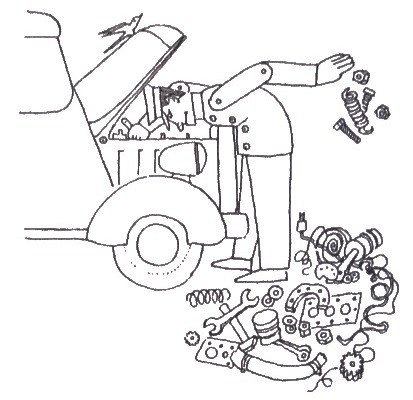
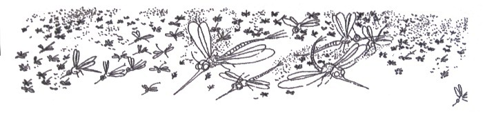
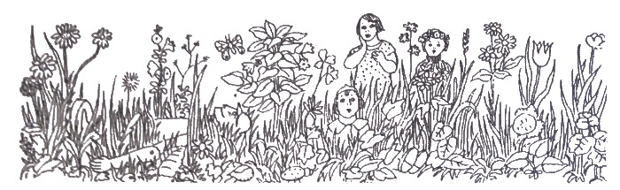

מאת אברהם רגלסון
ספור מרתק ומשעשע על מסע משפחת בובות, מאמריקה אל אימן שרונה שבארץ-ישראל הקטנה (1933), והרפתקאותיהן ביבשה, באויר ובים.

תקציר:
כשבעים וחמש שנה לאחר הופעת המהדורה הראשונה של ספר אהוב זה בתל-אביב, הנה הוא מופיע כעת במהדורה שישית מחודשת שבעריכת שרונה, בתו של הסופר ו"אם הבובות" המקורית. כשמשפחתה עלתה מאמריקה לארץ-ישראל הקטנה ב-1933, נאלצה שרונה להשאיר את בובותיה עם חברתה פיליס, אך הבובות, מרוב געגועיהן לאימן – למסירותה, שיריה, סיפוריה ושולחן-השבת שלה – הכריעו פה אחד לצאת לדרכן אל מעבר לים בעקבותיה. ספר מקסים זה אודות מסע הבובות ביבשה, בים, ובאויר, שעשיר כל-כך במסורת ורגש יהודי, ממזג פנטזיית-בובות בקורות-האמת של עליית משפחת הסופר.
קטעים נבחרים:
כך נפתח הספר:

אֲנִי אַבִּא, וַאֲנִי חוֹבֵשׁ מִשְׁקָפַיִם, וּבְכָל יוֹם שְׁלִישִׁי וְיוֹם שִׁשִּׁי אֲנִי מְצַחְצֵחַ הַנַּעֲלָיִם,
וּמִפְּנֵי שֶׁאֲנִי דָר בַּחוֹלוֹת עַל שְׂפַת הַיָּם, אֵין זֶה מוֹעִיל לִי כְּלוּם. תָּמִיד נְעָלַי מְאֻבָּקוֹת. אִם תִּרְאוּ בְּתֵל-אָבִיב יְהוּדִי שֶׁרֹאשׁוֹ מְגֻלֶּה, עַל חָטְמוֹ מִשְׁקָפַיִם, נְעָלָיו מְאֻבָּקוֹת, וּבְיָדוֹ סַל עוֹבֵר עַל גְּדוֹתָיו סֶלֶק וּבְצָלִים וּצְנוֹן, תֵּדְעוּ שֶׁאֲנִי הוּא הַמֵּבִיא יְרָקוֹת הַבָּיְתָה, אֹכֶל לִילָדָי.
איך נראו בובות בימים ההם? ודאי לא כפי שהורגלנו לראותן בשנים האחרונות. הן לא נבנו עם יכולת לדבר, לבכות, ללכת, לשתות, להרטיב, לגלגל או לעצום עיניים, ובודאי שלא היו בובות בַּרְבִּי או קֶן! יצרו אותן בפשטות, והן היו שבריריות יותר, אך אולי גם אהובות יותר. כפי שאין משליכים ילד פצוע, לא השליכו בובות פגומות, אלא דאגו, טיפחו והתמסרו להן אימהותיהן הצעירות, כפי שמתייחסים לילד פצוע.
בפרק הראשון, הקורא נפגש עם הבובות, שבע במספרן, (אחת עם רגל שבורה). למרות שהבעת תווי פניהן היתה "קפואה", לכל אחת מיוחסות גם אישיות וגם כישרונות מיוחדים. והיו לשרונה גם שני "בנים" – אך ספק "בובים" היו. האחד, בלט-עין (הידוע כ"פַּפַּי" לפני קום המדינה) עשוי מתכת, ובגבו מפתח. כשמתחוהו, פרץ במין ריקוד משונה. ה"בוב" השני, שקראו לו "תִינגּ-אוּם-בַּבּ" במהדורות מוקדמות, לאחר קום המדינה הוחלף שמו ל"מילתא-זוטרתא" (שפרושו: משהו קטן, של מה-בכך). הרי תאורו:
מִלְּתָא זוֹטַרְתָּא – עָלָיו כָּתוּב: עָשׂוּי בְּרוּסְיָה. קָטָן הוּא, עָגֹל הוּא, אֲדַמְדַּם הוּא, דּוֹמֶה מִצַּוָּארוֹ וּלְמַטָּה לְבֵיצָה. כֻּלוֹ עָשׂוּי עֶץ. סְגֻלָּה מְיֻחֶדֶת יֶשׁ לוֹ לְמִלְּתָא זוֹטַרְתָּא שֶׁאִי-אֶפְשָׁר לְהַפִּילוֹ בְּשׁוּם פָּנִים. מַפִּילִים אוֹתוֹ – מִיָּד הוּא קָם. דּוֹרְכִים עָלָיו – הוּא קָם. וְהוּא שׁוֹבָב גָּדוֹל וְרַעַבְתָּן נוֹרָא. כַּמָּה שֶׁהוּא אוֹכֵל, לֹא מַסְפִּיק לוֹ.

כמה דאגה והתמסרה שרונה הקטנה ל"ילדיה"! כשהוריה החליטו להגר לארץ-ישראל, אמרה:
"אֲנִי אֶתֵּן אֶת הַבֻּבּוֹת שֶׁלִּי מַתָּנָה לְפִילִיס." פִילִיס הִיא יַלְדָּה-שְׁכֵנָה, הַדָּרָה בְּאוֹתוֹ בַּיִת מִלְמַעְלָה, וְהִיא חֲבֵרָה שֶׁל שָׁרוֹנָה.
הֶעֶלְתָה שָׁרוֹנָה אֶת הַבֻּבּוֹת לְדִירַת פִילִיס, וְכֵן אָמְרָה שָׁרוֹנָה לְפִילִיס: "אֲנִי נוֹסַעַת לְאֶרֶץ-יִשְׂרָאֵל, וַאֲנִי נוֹתֶנֶת לָךְ אֶת הַבֻּבּוֹת שֶׁלִּי. הַאֲכִילִי אוֹתָן, הַשְׁקִי אוֹתָן, קְחִי אוֹתָן לְטִיּוּלִים. הַשְׁגִּיחִי שֶׁלֹּא תִהְיֶה קְטָטָה וּמְרִיבָה בֵינֵיהֶן, כִּי אִם תִּחְיֶינָה יַחַד בְּחִבָּה וּבְשָׁלוֹם. הַשְׁגִּיחִי, שֶׁלֹּא יִצְבֹּט אוֹתָן בַּלְט-עַין, וְשֶׁמִּלְּתָא זוֹטַרְתָּא לֹא יְנַגַּח אוֹתָן בְּרֹאשׁוֹ הַקָּטָן. וְשַׁפְשְׁפִי אֶת שִׁנֵּיהֶן מִדֵּי בֹקֶר בְּמִשְׁחַת-שִׁנָּיִם."
שָׂמְחָה פִילִיס מְאֹד עַל הַבֻּבּוֹת וְהִבְטִיחָה לַעֲשׂוֹת כְּכָל אֲשֶׁר בִּקְשָׁה מִמֶּנָּה שָׁרוֹנָה.
נָשְׁקָה שָׁרוֹנָה לְבֻבּוֹתֶיהָ וְאָמְרָה לָהֶן: "הֲיֶינָה בֻּבּוֹת טוֹבוֹת. אַל תְּצַעֵרְנָה אֶת פִילִיס. כַּאֲשֶׁר הִיא מַגִּישָׁה לָכֶן אֹכֶל, תֹּאכַלְנָה. תִּזָּהֵרְנָה שֶׁלֹא לִשְׁפֹּךְ אֶת הֶחָלָב מִן הַכּוֹסוֹת, תִּשְׁכַּבְנָה לִישׁוֹן בְּשָעָה מֻקְדָּמֶת. אַתְּ, שׁוֹשַׁנָּה, אַתְּ הַגְּדוֹלָה מִכֻּלָּן. עָלַיִךְ לְהַשְׁגִּיחַ שֶׁתִּתְנַהֵגְנָה יָפֶה וְשֶׁתִּהְיֶינָה תָּמִיד נְקִיּוֹת. שׁוּלַמִּית תַּעֲזֹר עַל יָדֵךְ."
גַּם לְבַלְט-עַיִן וְגַם לְמִלְּתָא זוֹטַרְתָּא נָשְׁקָה שָׁרוֹנָה, וּבִקְשָׁה מֵהֶם שֶׁיִּהְיוּ יְלָדִים טוֹבִים.
וְנִדְמֶה לִי,כִּי הַבֻּבּוֹת לֹא הֵבִינוּ שֶׁשָּׁרוֹנָה יוֹצֵאת לְדֶרֶךְ אֲרֻכָּה אֲרֻכָּה, הַרְחֵק הַרְחֵק מֵהֶן, כִּי נְתָוּנהָ לָלֶכֶת, וְלֹא הִתְנַגּדוּ כְלָל. וְגַם שָׁרוֹנָה לֹא הֵבִיָנה בְּבֵרוּר שֶׁהִיא נִפְרֶדֶת מֵעַל הַבֻּבּוֹת לְיָמִים רַבִּים מְאֹד, אוּלַי לָנֶצַח. הַנְּסִיעָה לְאֶרֶץ-יִשְׂרָאֵל כְּמִשְׂחַק בְּעֵינֶיה. עַל-כֵּן לֹא בָכְתָה שָׁרוֹנָה בְּהִפָּרְדָהּ מֵעַל בֻּבּוֹתֶיהָ.
וּפִילִיס הִשׁתַּדְּלָה לִהְיוֹת אֵם טוֹבָה לַבֻּבּוֹת. הֶאֱכִילָה אוֹתָן בְּעִתָּן, יִשְּׁנָה אוֹתָן בְּעִתָּן, לָקְחָה אוֹתָן לְטִיוּלִים, נָתְנָה לָהֶן עֻגּוֹת וְסוּכָּרִיּוֹת. אֲבָל הַבֻּבּוֹת לֹא דָבְקוּ בָהּ לְאַהֲבָה אוֹתָהּ. הֵן הִתְגַּעְגְּעוּ עַל אִמָּא שֶׁלָּהֶן, עַל שָׁרוֹנָה, וְנַעֲשׂוּ עַצְבָּנִיּוֹת וּבַכְיָנִיּוֹת. אֲפִלּוּ הַגְּדוֹלָה, שׁוֹשַׁנָּה, הָיְתָה בוֹכָה הַרְבֵּה. בַּלֵּילוֹת הָיוּ מִתְעוֹרְרוֹת מִשְּׁנָתָן וְצוֹעֲקוֹת "שָׁרוֹנָה, שָׁרוֹנָה! אֲנַחְנוּ רוֹצוֹת לִישׁוֹן עִם שָׁרוֹנָה!" נִצְטָעֲרָה פִילִיס עַל שֶׁלָּקְחָה אוֹתָן. כֵּן עָבְרוּ חֳדָשִׁים אֲחָדִים, וְהַבֻּבּוֹת, שֶׁלֹֹא אָכְלוּ כְהֹגֶן, נַעֲשׂוּ רָזוֹת וְדַקּוֹת מְאֹד...
...פַּעַם בְּעֶרֶב שַׁבָּת רָחֲצוּ שׁוֹשַׁנָּה וְשׁוּלַמִּית אֶת עַצְמָן וְאֶת אַחְיוֹתֵיהֶן, הַבֻּבּוֹת הַקְּטַנּוֹת, וְאָמְרוּ אֶל פִילִיס: "אֲנַחְנוּ רוֹצוֹת לַעֲרֹך שֻׁלְחָן שֶׁל שַׁבָּת, כְּמוֹ שֶׁהָיְתָה שָׁרוֹנָה עוֹשָׂה." לֹא יָדְעָה פִילִיס אֵיךְ עוֹרְכִים שֻׁלְחָן שֶׁל שַׁבָּת, וְהִנִּיחָה לַבֻּבּוֹת לַעֲשׂוֹת כְּחֶפְצָן. סִדְּרָה שׁוֹשַׁנָּה שֻׁלְחָן קָטָן בְּאֶמְצַע חֲדַר-הַיְלָדִים, וְהֶעֱמִידָה כִּסְאוֹת קְטָנִּים מִסָּבִיב לַשֻּׁלְחָן, כִּסֵא לְבֻּבָּה, וְגַם לְבַלְט-עַיִן וּלְמִלְּתָא זוֹטַרְתָּא הֶעֱמִידָה כִסְאוֹת. וְשׁוּלַמִּית שָׂמָה עַל הִשֻּׁלְחָן מַפִּית לְבָנָה, וְחַלּוֹת קְטַנּוֹת שֶׁהִיא אָפתָה בְּעֶצֶם יָדֶיהָ, וְנֵרוֹת קְטַנִּים בְּפָמוֹטוֹת קְטַנִּים, וּבַקְבּוּק יַיִן קָטָן עְם כּוֹס קְטַנָּה לְקִדּוּשׁ – הַכָּל כַּאֲשֶׁר בִּהְיוֹת שָׁרוֹנָה אִתָּן.

וּפִילִיס הִסְתַּכְּלָה בְּכָל מַה שֶּׁעָשׂוּ, כִּי הִיא רָצְתָה לִלְמֹד אֶת דַּרְכֵי שָׁרוֹנָה: אוּלַי, אִם תַּעֲשֶׂה הַכֹּל כְּמוֹ שָׁרוֹנָה, תִּמְצָא חֵן בְּעֵינֵי הַבֻּבּוֹת. הִדְלִיקָה שׁוֹשַׁנָּה אֶת הַנֵּרוֹת, וּבֵרְכָה בְרָכָה עֲלֵיהֶם, בְּכַסּוֹתָהּ אֶת פָּנֶיהָ בְּיָדֶיהָ, בְּדִיוּק כְּמוֹ שָׁרוֹנָה. אָז שָׁרוּ כָל הַבֻּבּוֹת שִׁיר שֶׁהָיְתָה שָׁרוֹנָה שָׁרָה אִתָּן בְּלֵילוֹת שַׁבָּת לְאַחַר הַדְלָקַת הַנֵּרוֹת. שֵׁם הַשִּׁיר "שׁוֹמְרֵי שַׁבָּת". שׁוּלַמִּית, שֶׁיֵּשׁ לָה קוֹל יָפֶה, שָׁרָה פָּסוּק אֶחָד בְּנִגּוּן חֲרִישִׁי וּמְמֻשָּׁךְ, מַמָּשׁ כְּמוֹ שָׁרוֹנָה... וְכָל הַבֻּבּוֹת עָנוּ אַחֲרֶיהָ...
נִזְּכְּרוּ הַבֻּבּוֹת כֵּיצַד הָיְתָה שָׁרוֹנָה שָׁרָה זֹאת בִּמְתִיקוּת וּבְנֹעַם, גָּבְרוּ גַעְגּוּעֵיהֶן עַל שָׁרוֹנָה, וּפָרְצוּ כֻלָּן בִּבְכִי גָדוֹל. גַם בַּלְט-עַיִן בָּכָה וְגַם מִלְּתָא זוֹטַרְתָּא בָּכּה. כְּשֶׁרָאֲתָה פִילִיס שֶׁהַבֻּבּוֹת בּוֹכוֹת, הִתְחִילָה גַם הִיא בּוֹכָה. אַחַר נִסְּתָה לְנַחֵם אוֹתָן בְּסִפּוּרִים מְתוּקִים וְהַבְטָחוֹת נְעִימוֹת, אַךְ הֵן מֵאֲנוּ הִנָּחֵם. אוֹתוֹ לַיְלָה שָׁכְבוּ הַבֻּבּוֹת לִישׁוֹן בְּלִי לִטְעֹם מְאוּמָה. רַק בַּכוּ וּבָכוּ עַד שֶׁנִּרְדָּמוּ.
רָאֲתָה פִילִיס כִּי הַבֻּבּוֹת לְעוֹלָם לֹא תֹאהַבְנָה אוֹתָהּ, כְּמוֹ שֶׁהֵן אוֹהֲבוֹת אֶת שָׁרוֹנָה, אָמְרָה אֶל לִבָּהּ: "אֶשְׁלַח אוֹתָן אֶל שָׁרוֹנָה , אֶל אִמָּא שֶׁלָּהֶן בְּאֶרֶץ-יִשְׂרָאֵל, וְלֹא תֶחֱלֶינָה תַּחַת יָדַי מֵרֹב גַּעְגּוּעִים."
בזמן שפיליס דאגה לסידורים הדרושים לנסיעת הבובות, הבבות ערכו אסיפה בינן לבין עצמן, והכריעו פה אחד להפציר בפיליס לשלוח אותן לאימן שבארץ-ישראל. פיליס השיבה לתחינתן בהובלתן החוצה, שם המתינה המכונית שאירגנה לנסיעתן לניו-יורק, עם הנהג ויקינג ליד ההגה. רבות היו הרפתקאותיהן בדרכן. הרי דוגמא מתוך התרחשויות השלב הראשון במסע, כשהמכונית חדלה לציית לנהגה.
הִבְהִילוּ מְכוֹנַאי מִן הַכְּפָר הַסָּמוּךְ, וְגַם הוּא חִקֵּר וּבִקֵּר, וְהֵנִיעַ וְהֵזִיעַ, אַךְ לַשָּׁוְא כָּל זֵעָתוֹ! אֵין הַמְּכוֹנִית רוֹצָה לָלֶכֶת. רָאָה מִלְּתָא זוֹטַרְתָּא שֶׁאֵין לַדָּבָר סוֹף, אָמַר: אֲנַסֶּה-נָא אָנֹכִי. אוּלַי אַצְלִיחַ." אִם רְאִיתֶם בְּנֵי-מֵעֶיהָ שֶׁל מְכוֹנִית, הֲלֹֹא תֵדְעוּ כִּי יֵשׁ לָהּ מִלְּפָנֶיהָ מַדְחֵף קָטָן בַּעַל אַרְבַּע כְּנָפַיִם כְּמוֹ רֵחַיִם שֶׁל רוּחַ, וּבְעֵת שֶׁהַמַּנְגָּנוֹן פּוֹעֵל, חוֹזֵר זֶה הַמַּדְחֵף בִּמְּהִירוּת וּמַשִּׁיב רוּחַ עַל הַצִּנּוֹרוֹת וְהַגַּלְגַּלִּים הַפְּנְימִיִּים. קָפַץ מִלְּתָא זוֹטַרְתָּא וְעָמַד עַל כְּנַף הַמַּדְחֵף הָאַחַת, וּמִזּוֹ אֶל הַכָּנָף הַשְּׁנִיהָ, וְכֵן אֶל הַשְּׁלִישִׁית וְהָרְבִיעִית, עַד שֶׁהִתְחִיל הַמַּדְחֵף מִסְתּוֹבֵב בְּכֹּחַ, וְהַמְּכוֹנִית תְּחִלָּה צִגְצְגָה: "צָג-צָג-צָג" ְואַחַר זָזָה קִּמְעָא. "הֵידָד!" קָרָא וִיקִינְג: "הֲרֵי הִיא הוֹלֶכֶת! מַהֵנְרָה! קְפֹצְנָה אֶל תּוֹכָהּ קֹדֶם שֶּתָּשׁוּב וְתַעֲמוֹד בְּלִי-נוֹעַ!" נִכְנְסוּ הַבֻּבּוֹת מַהֵר אֶל תּוֹךְ הַמְּכוֹנִית, שׁוּלַמִּית עָזְרָה לְבִתְיָה הַקְּטַנָּה, וְשׁוֹשָׁנָּה לְמִרְיָם פְּצוּעַת-הָרָגֶל, – בַּלְט-עַיִן, מִלְּתָא זוֹטַרְתָּא וּוִיקִינְג יָשְׁבוּ בַמּוֹשָׁב הַקִּדְמִי, – וְהַמְּכוֹנִית רָצָה חֲלָקוֹת!

בְּשָׁלוֹם עָבְרוּ אֶת גְּבוּל פֶּנְסִילְְוֵינְיָה וּבָאוּ אֶל נְיוּ-גֶ'ְרסִי... אַך [לאחר חניה קצרה] בִּרְצוֹת וִיִקינְג לִנְסֹעַ הָלְאָה מָצָא, כִּי שׁוּב אֵין הַמְּכוֹנִית מְצַיֶּתֶת לוֹ: קָפֹא קָפְאָה תַחְתֶּיָה וְאֵינָהּ זָזָה. הַפַּעַם הִתְעַקֵּשׁ לִמְצֹא אֶת שֹׁרֶשׁ הָרָע. יָצָא, הִסִיר אֶת מִכְסֵה-הַנִּיקֶל, וְהִפְרִיד אֶת הַמַּנְגָּנוֹן לַחֲלָקָיו. נִצְטַבֵּר עַל הָאָרֶץ גַּל שֶׁל בְּרָגִים, גַּלְגַּלִּים, וָוִים, שְׁפוֹפָרוֹת, טַבָּעוֹת וְצִנּוֹרוֹת.
וְהַמָּקוֹם – עַל יַד שָׂדֶה, לֹֹא רָחוֹק מִן הָעֲיָרָה הוֹפְּוֶל (בְּעִבְרִית יְִהֶיה זֶה בְּאֵר-תִּקְוָה). אָמְרוּ הַבֻּבּוֹת אִשָּׁה אֶל אֲחוֹתָהּ: "עַד שֶׁוִּיקִינְג עוֹשֶׂה בִּמְלַאכְתּוֹ, לָמָּה נִהְיֶה מִתְבַּשְּׁלוֹת בְּחֹם-הַמְּכוֹנִית? נְחַלֵּץ עַצְמוֹתֵינוּ עַל הָעֵשֶׂב וְנִשְׁאַף אֲוִיר צַח". יָצְאוּ וְהִתְפַּשְּׁטוּ בַשָּׂדֶה, בַּלְט-עַיִן שָׁכַב בְּצֵל שִׂיחַ וַיֵּרָדֵם. רִיבֶלֶה קָלְעָה זֵר מִפְּרָחִים. שְׁאָר הַבֻּבּוֹת נָחוּ לָהֶן לְאוֹר-הַשֶּׁמֶשׁ. רַק שׁוּלַמִּית עָמְדָה וְדָאֲגָה, כִּי הַיּוֹם עֶרֶב שַׁבָּת, וְיֵשׁ סַכָּנָה שֶׁלֹּא יַגִּיעוּ אֶל נְיוּ-יוֹרְק עַד לְאַחַר שְׁקִיעַת-הַחַמָּה, וְנִמְצֵאת הַשַּׁבָּת מְחֻלֶּלֶת בְּיָדָן. מִלְּתָא זוֹטַרְתָּא נִתְרַחֵק מֵעֲלַיהֶן וְנֶעְלַם. וַדַּאי הָלַךְ לְבַקֵּשׁ תּוּתֵי-בָר, כִּי עַל-כֵּן רַעַבְתָּן הוּא.
פִּתְאֹם נִשְׁמַע מִגָּבוֹהַּ קוֹל נְהִימָה דַקָּה וְטֶרֶם תֵּדַעְנָה הַבֻּבּוֹת עַד-מָה, יֵרֵד עלֲיֵהֶן בִּדְמוּת עֲנָנָה רְחָבָה, גְּדוּד יַתּוּשִׁים, וְהֵם הָיוּ נוֹרָאִים וּגְדוֹלִים מְאֹד בְּעֵינֵי הַבֻּבּוֹת: כַּנְפֵיהֶם כֶּסֶף שָׁקוּף, רַגְלֵיהֶם חוּטֵי-בַרְזֶל דַּקִּים, אֲרֻכִּים וְעַקְמוּמִיִּים, גּוּפָם עוֹפֶרֶת, וְזָנָב לָהֶם כַּחֲנִית מְמֹרָטֶת; רֹאשָׁם נְחֹשֶׁת, עִם עֵינֵי זְכוּכִית בּוֹלְטוֹת וּלְפִיהֶם חֶרֶב-פְּלָדָה נוֹצֶצֶת, חֶרֶב-פִּיפִיּוֹת חֲלוּלָה מִבִּפְנִים וּבְחֻדָּהּ נֶקֶב קָטָן, בַּעֲדוֹ יִמְצֹצוּ. בְּרֹאש הַגְּדוּד עָף הַמְפַקֵּד, גָּדוֹל וְנוֹרָא מִכֻּלָּם. עָטוּ הַיַּתּוּשִׁים אֶל הַבֻּבּוֹת בְּרִטּוּן וּבְזִמְזוּם, כְּשֶׁחַרְבוֹתֵיהֶם שְׁלוּחוֹת לִדְקֹר וְלִגְזֹר.
וְאוּלָם קוֹל הַמְפַקֵּד נִשְׁמַע בָּרָמָה: "לְהִסְתַּדֵּר!" הִסְתַּדְרוּ כָּל הַיַּתּוּשִׁים בְּעַמּוּד גָּבוֹהַּ בָּאֲוִיר, מֵאָה לַטּוּר שְׁתִי וְעֵרֶב, חֲמִשִּׁים טוּר לְרֹחַב, חֲמִשִּׁים טוּר לְאֹרֶךְ, וּמָאתַיִם טוּר לְגֹבָהּ, כֻּלָּם מְרַחֲפִים בִּמְקוֹמָם, רַחֵף וְנַפְנֵף בְּכַנְפֵיהֶם. וְהַמְפַקֵּד עָמַד יְחִידִי כְּנֶגְדָּם, וַיִּקְרָא: "בְּטָרָם תִּטְעֲמוּ מִבְּשַׂר-הַבֻּבּוֹת הַחַי, בְּטֶרֶם תִּשְׁתּוּ אַף טִפַּת-דָּם אַחַת, הָבוּ גֹדֶל לִמְפַקֶּדְכֶם-מַנְהִיגְכֶם! אֲנִי זַמְזְמָן, שׂר הַזַּמְזוּמִים!" הִרְעִימוּ כָל הַיַּתּוּשִׁים קוֹל אֶחָד: "יְחִי זַמְזְמָן!"

נְאוּם הַמְפַקֵּד: "וְעַתָּה, שִׁירוּ אֶת הַ"דָּם", שִׁיר אֲשֶׁר לַמּוֹסְקִיטוֹת!" זִמְזְמוּ וְנֹהֲמוּ כָּל הַיַּתּוּשִׁים יַחְדָּו, כְּשְׁהֵם מִתְנַדְנְדִים עַל כַּנְפֵיהֶם הֵנָּה וָהֵנָּה בָאֲוָיר:
דָּם, דָּם, דָּם לִמְצֹץ,
רַק לִמְצֹץ וְלַעֲקֹץ!
מִכָּל לָשׁוֹן נְרוֹמָם,
אִם נַרְבֶּה לְעַלַּע דָּם!
מַנְהִיג לָנוּ זַמְזְמָן,
אֵין כָּמֹהוּ אֶגְרוֹפָן:
הוּא מוֹצֵץ, הוּא רוֹעֵץ,
הוּא עוֹשֶׂה כָּל שֶׁחָפֵץ.
דָּם, דָּם, דָּם לִמְצֹץ,
רַק לִנְתֹּץ וְלַעֲרֹץ!
כֵּן נֶאֱמַץ מִכָּל עָם,
וְנִמְלֹךְ עַל הָעוֹלָם!
תַּם הַשִּׁיר, וְזַמְזְמָן קָרָא: "לְצַחְצֵחַ הַחֲרָבוֹת!" נִתְפָּרֵד הַגְּדוּד שְׁנַים-שְׁנַים, וְכָל יַתּוּשׁ צִחְצַחַ וְלִטֵּשׁ אֶת חֶרֶב-פִּיו שֶׁלּוֹ בְּחֶרֶב-פִּיו שֶׁל בֶּּן-זוּּגוֹ, כְּרַחֲפָם זֶה נֶגֶד זֶה, וַיְהִי קוֹל קִשְׁקוּשׁ וְנקּוּשׁ וְצִלְצוּל!
הַמְפַקֵּד נָתַן אוֹת, וְכָל הַיַּתּוּשִׁים, בִּקְרִיאַת "יְחִי זַמְזְמָן!", הִתְנַפְּלוּ בְּתֵאָבוֹן רָב עַל הַבֻּבּוֹת הַנִּבְהָלוֹת וְהַנְּבוֹכוֹת. הֵן הֵרִימוּ קוֹל-צְעָקָה, וַיָבוֹא מִלְּתָא זוֹטַרְתָּא בְּטִיסָה וּבִקְפִיצָה, וַיָּבוֹא וִיקִינְג, רָץ בְּרַגְלָיו הָאֲרֻכּוֹת, וְיַחַד עִם הַבֻּבּוֹת עָרְכוּ קְרָב עִם הַיַּתּוּשִׁים, וְגַם הִפִּילוֹ מֵהֶם הַרְבֵּה חֲלָלִים. וְאוּלָם בִּמְקוֹם הַהֲרוּגִים וְהַפְּצוּעִים, בָּאוּ חֲדָשִׁים, וַיַּעֲקְצוּ וַיִּמְצְצוּ וַיִדְקְרוּ בְחַרְבוֹתֵיהֶם הַחַדּוֹת. וְאַף-עַל-פִּי שֶׁהַבֻּבּוֹת הָיוּ עֲשׂוּיוֹת מֵחֹמֶר קֶשֶׁה, בְּכָל-זֹאת פֻּצְעוּ וְחֻבְּלוּ, וּבִלְחָיֵיהֶן וְצַוְְּארֵיהֶן עָלְתָה סַפַּחַת וּפַרְחָה תִפְרַחַת, וְרַבּוּ חַבּוּרוֹתֵיהֶן. וְקוֹל צַעֲקָתָן – אֵימָה. 
כתוב בשפה כמעט תנ"כית, הספר מגלם בו את גישת הסופר ללשון העברית. הוא האמין אמונה שלמה שאין לפשט או להוריד ברמת השפה בספרות ילדים, אלא לשאוף לרומם ולהעשיר את אוצר המילים שלהם ע"י טיפוח אהבת המילה הכתובה, ועידוד הסקרנות להבין ולהתגבר על מילה לא שיגרתית.
זהו ספר איכותי שהקריאה בו כולה הנאה צרופה לכל הדורות: לילדים, להוריהם ואף לסבא ולסבתא. אין מתנה שיעריכו יותר!
|